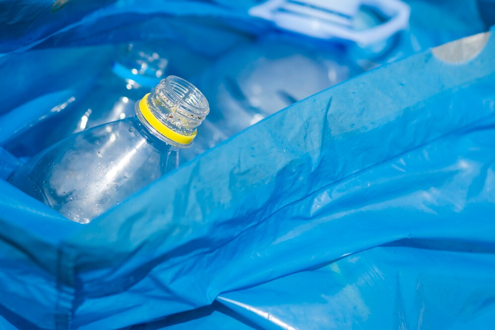

A műanyagokat hét fő kategóriába sorolják PET, PE-HD, PVC, PE-LD, PP, PS és egyéb anyagok. Újrahasznosítás folyamata Újrahasznosítás folyamata Szétválogatás Tisztítás Előkezelés Darálás Granulálás Gázosítás, hidrogénezés 